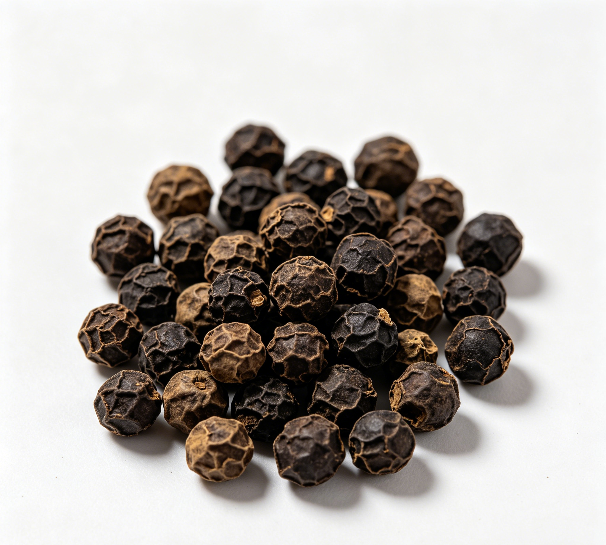

📋 基本信息
中文名黑胡椒
拉丁名Piper nigrum L.
英文名Black Pepper
产地科：胡椒科（Piperaceae）；属：胡椒属（Piper）；拉丁学名：Piper nigrum L.。原产于印度西南海岸，现广植于热带地区；我国主产于海南、云南、广东、广西、台湾等省区，其中海南为我国最大产区。
性状黑胡椒 呈球形，直径3.5～5mm。表面黑褐色，具隆起网状皱纹，顶端有细小花柱残迹，基部有自果轴脱落的疤痕。质硬，外果皮可剥离，内果皮灰白色或淡黄色。断面黄白色，粉性，中有小空隙。气芳香，味辛辣。
白胡椒 表面灰白色或淡黄白色，平滑，顶端与基部间有多数浅色线状条纹。【《中国药典》2020年版一部】
用法用量0.6～1.5g，研粉吞服。外用适量。【《中国药典》2020年版一部】
贮藏密闭，置阴凉干燥处。【《中国药典》2020年版一部】
☯ 传统属性
四气热
五味辛
归经胃、大肠经
功能主治温中散寒，下气，消痰。用于胃寒呕吐，腹痛泄泻，食欲不振，癫痫痰多。【《中国药典》2020年版一部】
禁忌症热病及阴虚有火者禁服，孕妇慎服。【《中药大辞典》】
毒性过量食用可刺激口腔及胃肠黏膜，引起烧心、胃痛、腹痛、腹泻；辛辣助热，可诱发或加重痔疮、便秘及阴虚火旺症状。胡椒碱可抑制肝脏药物代谢酶（CYP3A4等）及P-糖蛋白，与多种药物同服可能升高其血药浓度。大量服用对子宫有刺激性，孕妇应慎用；个别人接触胡椒粉可诱发打喷嚏等刺激反应。
适宜体质阳虚质、气郁质
适宜证型阳虚证、肾阳虚证、脾胃虚寒证、气滞证
🔬 现代研究
主要成分主要含酰胺类生物碱：胡椒碱（piperine，药典要求不得少于3.3%，商品中一般约3%～9%）、异胡椒碱、胡椒脂碱、胡椒林碱、胡椒新碱、胡椒亭等，为胡椒辛辣味和主要活性成分。另含挥发油（黑胡椒约1.2%～2.6%，白胡椒约0.8%），油中主成分为胡椒醛、二氢香芹醇、氧化石竹烯、β-石竹烯、柠檬烯等；尚含树脂、淀粉、蛋白质及多种微量元素。
药理作用现代研究表明，胡椒碱为胡椒主要活性成分：①抗惊厥：对小鼠实验性电惊厥及戊四氮、士的宁等所致惊厥有对抗作用，其简化结构类似物“抗痫灵”曾用于癫痫治疗；②抗炎、镇痛、抗氧化；③促进胆汁分泌、减慢肠蠕动、抗溃疡；④调节糖脂代谢、保护心血管、抗动脉粥样硬化；⑤免疫调节及抗肿瘤（抑制肿瘤增殖与转移）；⑥镇静催眠，可延长戊巴比妥所致睡眠时间；⑦可抑制CYP3A4及P-糖蛋白，提高多种药物的生物利用度，是著名“生物利用度增强剂”。
食疗功效传统食疗认为胡椒能温中散寒、健胃消食、下气消痰。民间常用胡椒炖猪肚治胃寒腹痛，胡椒粉冲服或与生姜、红糖同煎缓解风寒感冒、胃寒呕吐；与羊肉、牛肉同炖可增温阳散寒之力。作为药膳调味品少量使用，可增进食欲、促进消化液分泌。
食养禁忌
🏭 产品形态与潜在功能
推荐形态
粉末丸剂干果
潜在功能